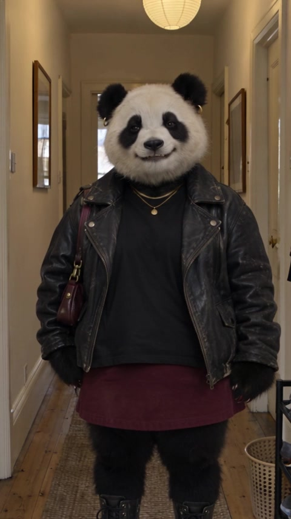
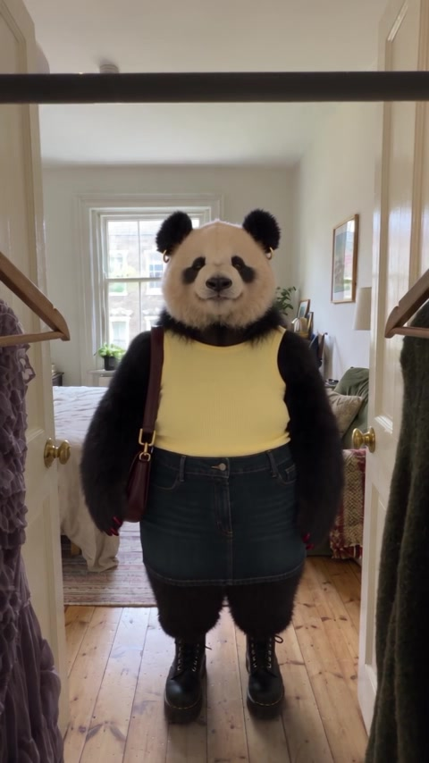
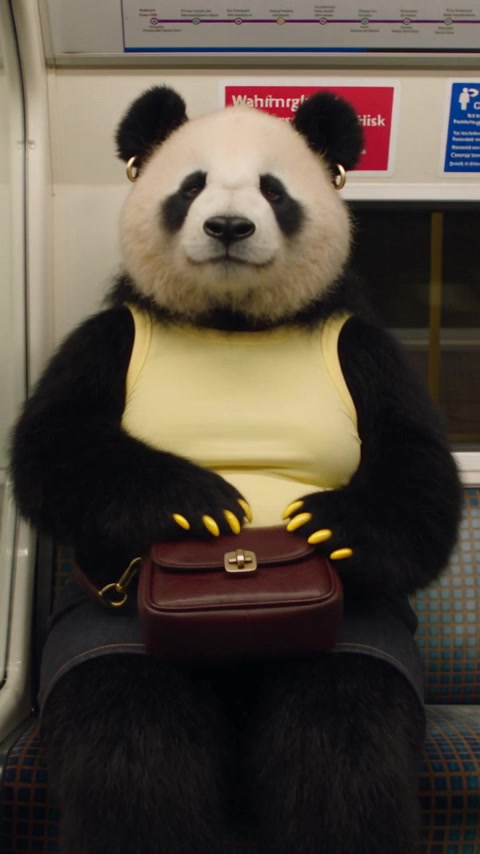

Samantha Smart
Her human flatmate. Short, nerdy and dryly funny. Friendship grows through ordinary shared routines.
Notes on an ongoing experiment
An experiment in ongoing short vertical stories: people establish a world, its characters and a story arc, and AI helps produce episodes within that direction.
People shape the world, review each episode and decide what gets published. Erica Wise is the first experiment.



The idea
The experiment starts with a useful fit: AI’s ability to make short videos, and the short-form feeds where people already follow stories every day.
The starting point is a world: its characters, surroundings, relationships, bigger arc and subplots. A person defines those things. AI works within that direction, helping produce episodes that build on what has already happened.
The platform under development brings that foundation into a repeatable production process. The aim is to automate more of how episodes are prepared, generated and published, with people setting the direction, reviewing the result and shaping where the story goes.
That could support many different concepts. Erica, a panda starting a new life in London, is the first experiment: a familiar kind of story told through a character that would normally require a substantial effects production.
Short-form and vertical video
Short-form is the starting point for this system. Dating, starting over, learning a skill or building a home already unfold through small posts. A fictional world can use that same rhythm, with characters and settings that would be difficult to film conventionally.
Someone might encounter the fourth episode first. It needs enough context to make sense on its own, and something that makes them care: an awkward encounter, an unexpected kindness, a plan that goes wrong. Following the character brings those moments together into a larger story.
For Erica, the aim is thirty seconds or less, shaped by the story. Direct-to-camera remarks, expressive voiceover, action and wordless music breaks give each episode its own rhythm. The format is brief; the relationships can develop over months.
The production constraints
The exciting possibility is bringing characters and worlds that need a film production budget into an ongoing series of short vertical videos.
The story might be as familiar as moving house or opening a café. But its main character could be a panda, or its neighbourhood could exist in another world. Those choices introduce production work that can make an everyday short-form series impractical for a small team.
Erica makes that concrete. A believable panda changes clothes, unpacks a flat, meets people and goes on dates in London. Conventionally, that means character animation and effects work across every episode. The challenge is sustaining that effort for little moments in her life.
AI offers a way to try those ideas, see how they feel and develop them further. The opportunity is to make more kinds of worlds practical in this format. Whether people keep watching still comes down to the characters, the story and how it makes them feel.
World creation and production
People establish the cast, setting, arc and subplots. Each episode develops within those creative boundaries.
Setting up a world means deciding who lives there, what they want, how they relate to one another and what can happen. Supporting characters and subplots give the series room to grow. Visual references, voices and creative rules make that world recognisable.
That becomes the material the system works from. It carries the larger direction and previous events into the next script, selects the right inputs and helps produce a draft. The creator can change the direction at any stage.
The creator sets the premise, point of view and larger arc. Decide what the characters want, what can change and which subplots can develop alongside the main story.
A premise, character background, main arc and supporting story threads.
Accept the take, ask for a precise revision, or rethink the episode. Only an approved version becomes the reference for what follows.
The platform and automation vision
Establish the world and story direction, generate within that remit, review the episode, then publish and carry its events forward.
The platform vision is a shared world feeding a repeatable cycle of scripts, references, generation and publication. Human involvement starts with the premise and continues through writing, revisions and approval. Automation handles more of the repeated work; people decide what the story should become.
Set up once. Update deliberately as the story develops.
Premise, emotional direction, main arc and ongoing subplots.
Lead and supporting cast, personalities, relationships, voices and wardrobe.
Recurring spaces, geography and approved visual references.
Look, performance, edit rhythm, music, captions and format.
This shared foundation is available to every episode.
Triggered by the schedule or a new story direction from the creator.
Read the larger arc and what has already happened. Decide the event and emotional change for this episode.
Set the action, dialogue, voiceover, text and sound. Choose a duration that fits the story.
Select the cast, clothes and locations. Flag any new reference needed and assemble the generation prompt.
Create the picture, performance, edit and audio. Save the draft with its script, references and settings.
Deliver tomorrow’s reel for review today.
Watch the complete episode.
Does the story work? Does the performance feel natural? Does it belong in this world?
Release only the approved version.
Prepare the vertical reel and its post for the chosen channel and release time.
If changes are needed: revise the script, references or generation, then return to review. The episode stays unpublished.
Record the approved events, outfits, relationships and unresolved threads. The next day’s episode uses this updated story record alongside the original arc.
The creator can intervene anywhere in this chain. A scheduled episode can follow the agreed arc without a fresh brief every day, while a new idea can change its direction. The recurring world supplies continuity; human decisions shape where the story goes.
The first story
An American panda moves to London after the end of a seven-year relationship and starts documenting her life.
The premise
She is excited and relieved to have made the move, but ordinary choices expose how much of her life used to be shared. Finding a room, choosing bedding and having nobody familiar to tell about her day can be funny, freeing or unexpectedly difficult.
Erica starts with a tiny audience, speaking to the camera as though to a handful of friends. Dating becomes a prominent thread, alongside the work of building an ordinary life.
She can feel a powerful connection with someone who does not feel the same way. She can also find closeness in a friendship she was not looking for. The humour comes from her observations and the people around her; the emotional story extends well beyond dating.
The same flat, café and neighbourhood appear as her relationships develop.
Her human flatmate. Short, nerdy and dryly funny. Friendship grows through ordinary shared routines.
A cocky, nonchalant peacock who runs the café with Miles. Feather hands, avian legs and a complete personal style.
Kit’s human café partner. Gay, East London, effortlessly unbothered. Their humour comes from how they see the world.
And a bench. It can become Erica’s place over time. Its meaning comes from returning with different weather, company and feelings.
Video examples
Moments from Erica’s life in London. Play with sound.
Arrival, unpacking, starting sixty days in London.
Unpacking the keepsake box she brought to London.
The grocery-shopping episode; approved benchmark for pace and emotional delivery.
Erica meets the peacock barista at her neighbourhood café.
Outfit changes, nerves and leaving for her first date.
The journey across London, ending with her greeting her date.
The first sixty days
Three movements across sixty days: the excitement of starting over, the uncertainty of connection, and the beginnings of belonging.
Beyond the first world
People already follow dating, new beginnings, home projects and everyday lives in short videos. Those familiar formats can also hold invented characters and ambitious worlds. The same production approach could support many such stories.
Life changes
A breakup, a new city and the awkward work of making friends. Familiar places slowly become part of a new life.
Current example: EricaWork & identity
Applications, interviews, small routines and changing plans. The ongoing question is what happens when work no longer defines the day.
Reference: unemployment diariesA long project
Someone builds or renovates their own house. Each episode follows one decision, discovery or setback on the way to moving in.
Reference: home renovationDIY & transformation
An ambitious beginner fixes a cramped flat with limited tools and money. Small before-and-after changes give each reel a clear result.
Reference: Danny + ChristinaEveryday life
Cooking for one, Sunday cleaning and the first guest. An ordinary home becomes the setting for independence, loneliness and comfort.
Reference: homebody vlogsFood & family
A person tries to learn the food they grew up with. Failed attempts, family calls and meals shared with friends provide an ongoing story.
Reference: Choki / silent vlogsTravel & independence
Missed trains, unfamiliar meals and unexpected company. Each stop changes how comfortable the character feels being on their own.
Reference: solo travel creatorsMaking a living
A café, a tiny bakery or a home studio. Follow the first order, quiet days, difficult customers and a regular who keeps returning.
Reference: business owner storiesLearning in public
A first sewing project becomes a gift, then a more ambitious idea. Mistakes and gradual improvement give the character something to work through.
Reference: beginner embroideryAn ongoing challenge
A beginner works towards an event while ordinary life interrupts. Missed sessions, a training friend and small milestones shape the journey.
Reference: accountability formatsExisting AI series
An AI traveller returns across different historical settings, from Tudor London to ancient Egypt. A familiar character connects the episodes while the world around her changes.
Reference: Majestic StudiosSerial mystery
A character posts about a small inconsistency in their building. Further encounters change its meaning as the audience pieces the story together.
Fictional directionMost cards are proposed story adaptations of existing online formats; Chloe VS History is an existing production. The strongest overlap is a person viewers can get to know, an experience unfolding over time, and something that changes from one post to the next.
These sources mix short-form examples with wider YouTube communities. The figures describe the named creators or categories, not expected results for a generated series. Chloe is a creative reference, not evidence of an automated production workflow. Historical stories also need research and fact-checking; a recurring character and convincing images do not establish historical accuracy. The mystery is a fictional direction.